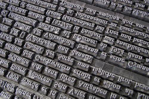

Punctuation

The following assumes some familiarity with terms like 'adverbial',
the nature of relative clauses and the differences between epithet
adjectives and classifiers.
Most of it will, however, be accessible without that knowledge and there
are links to take you to the relevant guides.
|  |
Other languages |
As usual, languages differ and punctuation conventions are very variable.
- European languages
- Most of these use the same marks as English but conventions vary
considerably. For example:
The usual double quotation marks in English ("text") appear in French as « text » and in German as „text” or «text».
Greek uses ';' as English uses '?' and uses a raised point [·] as a colon or semi-colon.
Spanish demands an inverted sign before exclamations and questions as in ¡ Text !, ¿ text ?
Spacing varies with some languages inserting a space before or after marks (notably French and Spanish). - Chinese languages
- Modern written Chinese uses a range of marks imported from Europe including the comma, semi-colon, colon, exclamation and question mark. It also has some non-European marks derived from older forms including a different form of quotation marks, a different form of the comma when used in lists as well as wavy underlines and separate symbols for titles. The form of the full stop is a small hollow circle. It's complicated.
- Japanese
- is somewhat similar to Chinese in using a range of punctuation derived from Europe but also some of its own (especially the use of brackets). The form of the full stop is a small hollow circle and the language also employs a middle dot to separate words.
- Korean
- also has a range of home-grown marks as well as using European conventions. These include the middle dot to separate items in a list and some different forms of quotation marks and brackets.
- Thai
- uses a range of marks: a separation indicator, an abbreviation indicator, marks which show the beginning of a paragraph or the end of a story and so on.
- Arabic
- Modern Arabic now uses a reversed comma and reversed question mark.
- Turkish
- uses a range of punctuation similar to European uses.
- Mathematics
- Languages vary in their use of the
comma for numerals. In English, the comma is used to separate
thousands etc. as in 10,987,005 and the point to separate decimals
as in 10.987005. In most languages, that would be 10.987.005
and 10,987005 respectively.
The ~ mark is commonly used in languages other than English to show a range 8 ~ 15, for example, where English uses 8 - 15 or 8–15.
 |
English punctuation |
In English, punctuation has sometimes been compared to intonation written down but that's not very accurate as we shall see. Originally, however, punctuation was developed by printers to guide the reading aloud of texts, especially bibles. Conventions which arose from that source are still evident but modern English punctuation use owes more to grammatical than phonological influences.
Punctuation has two functions:
- Separation
Some marks are used to separate units of language. The full stop, the comma and the colon are examples. The separation can occur:- Between units: for example, we use a full stop or a
semi-colon to separate discrete sentences or clauses. So we
get, e.g.:
The sun was shining. The overnight rain had stopped
or
The weather was lovely; the rain had stopped. - Within units: for example, we use the comma to separate out
a smaller unit inside a larger one. So we get, e.g.:
The rain, or what was left of it, finally stopped.
- Between units: for example, we use a full stop or a
semi-colon to separate discrete sentences or clauses. So we
get, e.g.:
- Specification
Some marks specify the function of language. The most obvious examples are question and exclamation marks but also included would be the apostrophe because that is used to show the function of the noun (possessive or descriptive when used, plural when absent).
We'll consider the most common and troublesome marks one by one.
 |
the comma |
The comma is a separation mark but it differs fundamentally from the
full stop, the colon and the semi-colon.
What is that difference?
Click here when you have an
answer.
The comma is used to separate parts of a
sentence. Usually, the colon, the semi-colon and a full stop are used to
separate units which can stand alone and be separated by a full stop.
For example:
She wanted to tell me the truth: Mary wasn't coming.
She wanted to tell me the truth; it wasn't going to be nice.
She wanted to tell me the truth. I knew it wasn't going to be
nice.
None of those sentences would be correct with the insertion of a comma.
Putting one in results in a comma splice. For more on that, see
the
answer about what comma splices are linked in the list of related guides at the end.
A comma, on the other hand, separates off sense units
within sentences or clauses.
By some measures, there are nearly 20 different rules for how we use a comma in English, and we'll deal with some in a minute. We can summarise more easily when a comma is allowed.
- The sentence parts must be joined together. For example:
The station itself was dark and deserted, but the station bar was warm and inviting
is correct punctuation use (although the comma is not obligatory).
*The station itself was dark and deserted, the station bar was warm and inviting
is incorrect because there's a comma splice between two stand-alone clauses. - The sentence parts must be grammatically similar. It is
possible, for example, to have
The station was deserted, and there was no one around to ask
but not possible to use a comma like this:
*The station was deserted, and the workers have been sitting in the bar
because the change of number and tense makes two sentences conventional. - We can't leave out verbs in the second part of the sentence
and still use a comma so
*The station appeared deserted, and filthy
is not possible although
The station appeared deserted, and it looked uncared for and dirty
is OK with or without the comma.
In the first sentence, leaving out the subject and the verb appear makes a comma impossible. - The parts of the sentence must be connected semantically (in terms of meaning).
A sentence such as
*Victoria station appeared deserted, although it was raining in Tokyo
is nonsense.
Rules of comma use

Note 1: the rules and conventions are different in different
languages. Many will demand a comma between all potentially
independent clauses. So we get errors such as
*I think, he's
crazy.
Note 2: the comma and the full stop are by far the most
frequent punctuation marks in English. The comma, however, is the
one which allows the most choice to the writer. Many
(non-)insertions of commas are matters of personal preference.
- adverbials
- A comma is never wrong, although not always necessary, when an
adverbial is placed at the front of a sentence.
Later, they went to the party
but not
*They went to the party, later
You'll see her if you come
but (usually)
If you come, you'll see her
It is almost always essential to put a comma into the sentence if the fronted adverbial contains a non-finite verb form or no verb at all:
In order to be sure to meet her, he went to the party
Hoping to see her, he went to the party
In hope of an encounter, he went to the party
Disjuncts and conjuncts, wherever they occur within the clause, are separated by commas conventionally:
It is, in my opinion, less than perfect
She has, however, come round to the idea
He will not change his mind, whatever you say - See the
guide to adverbials linked in the list of related guides at the end, for more.
There are times when it is necessary to separate off the adverbial, wherever it comes in the sentence, to avoid confusion, too. For example, remove the commas from this to see what is meant.
He came to the party, hoping to see her, dressed in a gorilla suit - relative clauses
- If the part of the sentence you are considering can be separated
off from the rest by putting brackets around it, it is non-integral
to the sense and/or is a non-defining relative clause so commas should
be used. See
the guide to
relative clauses linked in the list of related guides at the end, for more.
So we can have:
I met the doctor, who lives near me, in the pub
vs.
I met the doctor who lives near me in the pub
In the first, the fact that the doctor lives near me is additional information; in the second, it defines which doctor we mean. - in lists
- Lists of anything and of any length are separated by commas.
Two items may also be connected with and with no comma
involved. If there are more than two items, the final comma is
optional (and called either the Oxford comma, incidentally, because
that is how the style was used by Oxford University Press, or a
serial comma).
She slowly, carefully opened the parcel
He took a long, deep drink
They went in, around(,) and through the garden without meeting
They can, may and probably will(,) come to the party
She brought beer, cokes(,) and crisps.
She let herself in, unpacked the shopping, fed the cat(,) and went to bed. - Note: a classifier and an adjective proper (an epithet) are not separated by
commas.
You can have a tall, lanky boy but not *a fast, racing car. See the guide to adjectives linked in the list of related guides at the end, for more. - in apposition
- If two items in a sentence denote the same thing (i.e. are
co-referential), they are in
apposition and are separated off by commas:
Ms. Smith, my landlady, has raised the rent
There are three animals, bears, snakes and tortoises, which hibernate in this country
Most of the 20 or so rules for comma use that appear on various websites and in books may be accounted for by the four rules above.
 |
the colon |
Colons are quite rare in English and perform two related functions:
- They indicate that what follows is caused or fulfilled by what
came before:
It was raining heavily: that's why I didn't go out.
You are obviously very tired: I should go now. - They indicate that a list is to follow:
In this sentence you will find two each of: verbs, nouns, adjectives and prepositions.
The colon can be replaced by a conjunct, conjunction or other
expression:
It was raining heavily(,) so I didn't go out.
It was raining heavily. Therefore, I didn't go out.
It was raining heavily, which meant I didn't go out.
There is a guide to conjuncts linked in the list of related guides at the end.
 |
the semi-colon |
Semi-colons connect two independent clauses but in other respects,
they function to separate ideas just as the comma does. They should
be used with care and only when the two clauses are sufficiently closely
related to be part of the same sentence.
I was getting soaked through; it was still raining hard.
but not
*I was getting soaked through; the rain was easing
Replacing a semi-colon with a comma results, usually, in a run-on
or comma-spliced sentence and is poor style at best, illiterate at
worst.
 |
dashes and brackets |
Dashes and brackets can be used instead of commas if there's a good
reason for doing so. Dashes, in particular, should be handled with
care and not used to separate fronted adverbials (and nor should
brackets be used that way). So these are unconventional at least:
Fortunately – the rain was easing
The rain was – fortunately – easing
(Fortunately) the rain was easing
There is sometimes a subtle difference between separately ideas with
commas and putting the in brackets. Brackets are usually taken by
the reader to refer to comment on the last phrase but commas are taken
to refer to the whole preceding clause. Compare, for example:
He first had the idea when he was a child (he
claims)
with
He first had the idea when he was a child, he
claims
The brackets denote the fact that it the fact that he was a child when
he had the idea that is being questioned but the commas call the whole
clause, i.e., that he had the idea as a child, into question.
|
|
inverted commas, quotations etc. |
For a direct quotation within a sentence, single inverted commas are
usual:
That sign says 'No smoking'
Publishing houses vary in their conventions concerning the use of double or
singular inverted commas for dialogue. The usual convention is:
"I'm glad we could meet," she said (comma inside the inverted
commas) or
She said, "I'm glad we could meet." (comma after reporting verb
but with the full stop inside the inverted commas).
If either ! or ? occur inside quotations, no comma or capital letter
follows:
"Go away!" he shrieked.
 |
the question and exclamation marks |
The ? is, rather obviously, used to show an interrogative but may
also be used to show how something has been said in terms of its
intonation, e.g.:
You're leaving early?
vs.
You're leaving
early.
Some sentences with subordinate clauses may lose the questions mark
(although it is technically required) when the clause is long enough:
Can you send me an email when you have finished all the work because
I need to get my bank to transfer the money into my French account
before the end of the financial year.
Exclamations marks should not be overused! They are a sign of
naive or immature writing!!!
|
|
the apostrophe |
Errors abound and there are those out here who delight in collecting, for example:
 |
 |
 |
| all wrong | ||
For the genitive (or possessive to be a lot less precise):
- Singular nouns which do not end in -s take 's to show possession: the man's bicycle, Peter's friend etc.
- Singular nouns which end in -s can be amended both with a simple
' or with 's (conventions in publishing houses vary):
James' car or
James's car, the class' teacher or the class's teacher.
Pronunciation varies too, with some preferring /dʒeɪmzɪz kɑː/ and others preferring /dʒeɪmz kɑː/ with a middle road of /dʒeɪmzəz kɑː/. - Plural nouns ending in -s (i.e., most of them) take a simple ' after the s: the neighbours' garden, the soldiers' position etc.
- Plural nouns not ending in -s take 's: the men's jobs, the formulae's solutions, the syllabi's main faults, the children's toys etc.
- If two separate entities are imagined, both take the apostrophe:
John's and Peter's houses are in London
so there are two separate houses
but in
John and Peter's house is in London
there is a single house belonging to two people.
and in
John and Peter's houses are in London
there is more than one house belonging to the same two people. - Compound nouns add the apostrophe to the end element:
my father in law's house
my sisters in laws' houses
etc.
For contractions:
- All contracted forms require an apostrophe:
you're [you are], he's [he is], they'll [they will], the horse'll [the horse will]
etc. - Contracted (i.e. clipped) forms of some words and numbers
sometimes take an apostrophe but some clipped forms are so
embedded in the language that they have lost it:
the '90s (also without the apostrophe)
on the 'phone (also without the apostrophe)
'flu' (usually without the apostrophes)
ad, maths, photos, sitcom, pub (all usually without the apostrophe)
etc. - Representations of dialect forms also take apostrophes where
needed:
huntin', shootin' an' fishin'
'old yer 'orses
etc.
Common apostrophe errors:
- The word its is the possessive adjective formed from
it and it takes no apostrophe:
the cat licked its paws
vs.
it's lying in the garden. -
one's is the possessive adjective form of one:
one must try to do one's best
ones is the plural pronoun form of one meaning referring to nouns:
I want the blue one not any of the red ones - your is the possessive adjective (your car etc.). you're is the contraction of you are
- whose is the possessive relative pronoun and wh-
question word:
whose car is this?
he's the man whose car I hit
who's is the contracted form of who is / who has:
who's done the damage?
who's coming? - Abbreviations in the plural do not take apostrophes:
DVDs, TVs, PCs, HDDs
etc.
In the possessive or with contractions, they function as above:
the DVD's broken
the PC's problem
the HDDs' capacities
etc.
Disputed areas (you choose):
- Numbers: we can have the 90's or the 90s or even the '90's or the '90s.
- Letters: is spelt with two t's or with two 't's or with two "t"s or, rarely, with two ts.
A note on teaching punctuation
It is unlikely, and probably unnecessary, that you would devote whole
lessons to this area (although a focus on paragraphing conventionally in
texts is another matter).
However, the temptation is either to ignore or simply correct errors in
learners' written work and that's not enough.
You do need to explain to learners where their L1 conventions may differ
and make clear what the rules are in English concerning the punctuation
which is troubling them.
| Related links | |
| comma splices | the guide to what they are and how to avoid them |
| adverbials | the guide to adjuncts, conjuncts and disjuncts |
| relative clauses | which discusses the nature of punctuation in defining and non-defining clauses |
| adjectives | for more on classifiers and epithets |
| conjuncts | and how they differ from conjunctions as well as the functions they perform |
References:
Chalker, S, 1984, Current English Grammar, London: Macmillan
Quirk, R, Greenbaum, S, Leech, G & Svartvik, J, 1972, A Grammar of
Contemporary English,
Harlow: Longman